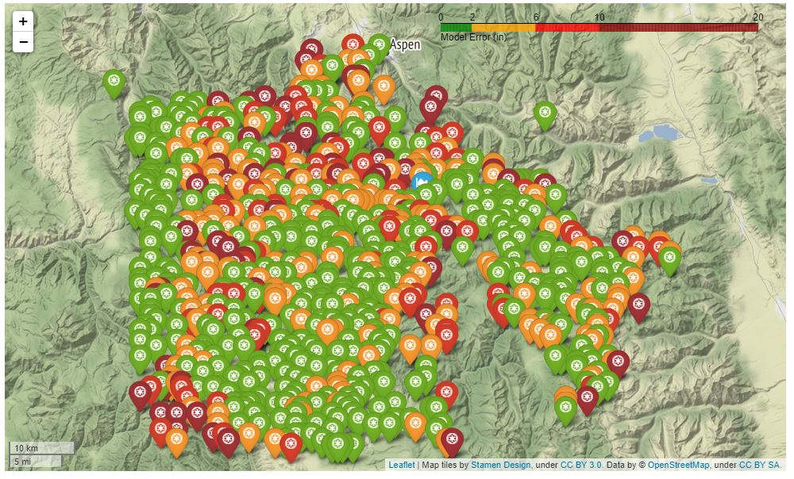

Performance Evaluation
Contents
Performance Evaluation#
Evaluation Methodology#
Model execution produces a 1-km grid SWE estimates across the study region, where the evaluation methodology compares the modeled SWE from the testing dataset to the NASA ASO observations.
 As a submission to the USBR Snowcast Showdown, we use standard evaluation criteria of root-mean-squared-error (RMSE) and coefficient of determination (R2) of the predictions to determine model accuracy and efficiency across the domain, as these metrics framed the evaluation criteria for the modeling competition.
where \(\hat{y_i}\) denotes the predicted value for a sample \(i\), \(y_i\) the observed value, \(\bar{y}\) the average observed value, and n the total number of samples.
As a submission to the USBR Snowcast Showdown, we use standard evaluation criteria of root-mean-squared-error (RMSE) and coefficient of determination (R2) of the predictions to determine model accuracy and efficiency across the domain, as these metrics framed the evaluation criteria for the modeling competition.
where \(\hat{y_i}\) denotes the predicted value for a sample \(i\), \(y_i\) the observed value, \(\bar{y}\) the average observed value, and n the total number of samples.
The coefficient of determination (R2) is a unitless measurement of the proportion of explained variance of the target variable by the model. A maximum R2 score of 1.0 indicates the predictor variables explain 100 percent of the variation in the target. In general, greater R2 and lower RMSE represent better model predictive performance.
Preliminary Evaluation of the Model#
Regional model evaluation is on the 25% testing data, where the known previous SWE values from NASA ASO flights support the previous SWE feature during model inference. The model demonstrates high spatial extrapolation of point observations (selected SNOTEL) to regional 1-km grid prediction skill across all regions with R2 values approaching 0.85, low regional RMSE values (4.4-in).
Model Training/Testing influences and Bias on Model Performance.#
The model training/testing partitioning methodology has a strong influence on model performance and the goal of model evaluation. The objective of the modeling effort was to examine the spatial extrapolation capacity of the model from selected monitoring stations to the overall region, best suited to a 75/25% training/testing split, respectively. While it is critical to address the strong serial correlation in SWE accumulation and melt throughout the season, the high correlation between weeks has the potential to inflate model skill when using a 75/25% training/testing split due to the previous SWE feature being known. An assessment of the operational capacity of the model is different than assessing the ability to extrapolate regional SWE from in-situ monitoring stations. For example, the operational capacity of the model should begin at the beginning of the water year (WY week 1) with a previous SWE value of 0-in for each 1-km grid. Model evaluation could then assess the forecasting skill on a hold-out dataset of an entire year in which known neighboring values do not control predictions, but rather driving to-date predictions from the predicted previous SWE values. Due to the high model performance, future work will target the assessment of model skill with an operational motivation
#Load packages
import os
from os import listdir
from os.path import isfile, join
import numpy as np
import pandas as pd
import h5py
import tables
import random
import matplotlib.pyplot as plt
import seaborn as sns
import sklearn
from sklearn.model_selection import train_test_split
from sklearn.metrics import mean_squared_error
from sklearn.metrics import mean_squared_error
from pickle import dump
import pickle
from tqdm import tqdm
### define new regions
Region_list = [
'N_Co_Rockies',
]
#Load the predictions/observations for the testing dataframe
### Load H5 train files into dictionary
RegionTrain= {}
for region in Region_list:
RegionTrain[region] = pd.read_hdf('Provided_Data/Final_Training_DF.h5', region)
pred_obs = {}
pred_obs['N_Co_Rockies'] = pd.read_hdf('Model/Model_Training/Model_Validation/Region_Predictions.h5', key = 'N_Co_Rockies')
y_pred = pred_obs['N_Co_Rockies']['y_pred']
y_test = pred_obs['N_Co_Rockies']['y_test']
#Plot the results in a parity plot
sns.set(style='ticks')
SWEmax = max(y_test)
sns.relplot(data=pred_obs['N_Co_Rockies'], x='y_test', y='y_pred', hue='Region', hue_order=Region_list, aspect=1.61)
plt.plot([0,SWEmax], [0,SWEmax], color = 'red', linestyle = '--')
plt.xlabel('Observed SWE')
plt.ylabel('Predicted SWE')
plt.show()
#Run model evaluate functions
r2_test = sklearn.metrics.r2_score(y_test, y_pred)
rmse_test = sklearn.metrics.mean_squared_error(y_test, y_pred, squared = False)
print(' R2 is ', r2_test)
print(' RMSE is ', rmse_test)
Model performance is quite high.
More in-depth model evaluation.#
We want to evaluate the model over the course of seasonal snow accumulation and melt, at differnt elevation bands, and spatially.
def Eval_DF(RegionTrain, Region, Predictions):
#get the testing split
y = RegionTrain[Region]['SWE']
X = RegionTrain[Region]
X_train, X_test, y_train, y_test = train_test_split(X, y, test_size=0.25, random_state=1234)
#Combine predictions with testing testing dependent DF,
X_test['y_pred'] = Predictions[Region]['y_pred']
X_test['error'] = X_test['SWE'] - X_test['y_pred']
#select key topographical and temporal features of interest for model evaluation
cols = ['Date', 'Long', 'Lat', 'elevation_m', 'prev_SWE', 'WYWeek', 'northness', 'SWE','y_pred', 'error']
X_test = X_test[cols]
return X_test
#Process the data into a useful dataframe for analysis
x = Eval_DF(RegionTrain, 'N_Co_Rockies', pred_obs)
#Plot the temporal error
sns.set(style='ticks')
sns.relplot(data=x, x='WYWeek', y='error', hue_order=Region_list, aspect=1.61)
plt.xlabel('Water year Week')
plt.ylabel('SWE Error (in)')
plt.title("Error over time", fontsize = 20)
plt.show()
A substantial amount of model error can be attributed to time.#
It appears the model exihibits limitations in predicting SWE during the melt phase.
#Plot the error by elevation
sns.set(style='ticks')
sns.relplot(data=x, x='elevation_m', y='error', hue_order=Region_list, aspect=1.61)
plt.xlabel('Elevation')
plt.ylabel('SWE Error (in)')
plt.title("Error by Elevation", fontsize = 20)
plt.show()
Model error increases with elevation#
#Plot the error by slope/angle = northness
sns.set(style='ticks')
sns.relplot(data=x, x='northness', y='error', hue_order=Region_list, aspect=1.61)
plt.xlabel('Northness')
plt.ylabel('SWE Error (in)')
plt.title("Error by Northness", fontsize = 20)
plt.show()
There appears to be no significant model error attributed to northness#
Lets look at the model predictions spatially, any patterns we can observe?
#load regionalized geospatial data
RegionTrain = open("Provided_Data/RegionTrain.pkl", "rb")
RegionSnotel = open("Provided_Data/RegionSnotel.pkl", "rb")
RegionTrain = pd.read_pickle(RegionTrain)
RegionSnotel = pd.read_pickle(RegionSnotel)
#Create Geospatial prediction point DF
Pred_Geo = RegionTrain['N_Co_Rockies'].copy()
Pred_Geo = Pred_Geo.reset_index().drop_duplicates(subset='cell_id', keep='last').set_index('cell_id').sort_index()
cols = ['Long','Lat','elevation_m','slope_deg','aspect']
Pred_Geo= Pred_Geo[cols].reset_index()
Pred_Geo
Use Folium and Geopandas to spatially visualize the predictions#
import geopandas as gpd
import folium
from folium import features
from folium.plugins import StripePattern
import branca.colormap as cm
import vincent
from vincent import AxisProperties, PropertySet, ValueRef, Axis
import hvplot.pandas
import holoviews as hv
from holoviews import dim, opts, streams
from bokeh.models import HoverTool
import hydroeval as he
import json
import warnings; warnings.filterwarnings("ignore")
#Map locations and scoring of sites
#def Map_Plot_Eval(self, freq, df, size):
def Map_Plot_Eval(GeoDF, Snotel, obs, err, pred, yaxis, error_metric):
print('Plotting monitoring station locations')
cols = ['cell_id', 'Lat', 'Long', 'geometry']
df_map = GeoDF[cols].copy()
#Get Centroid of watershed
centeroid = df_map.dissolve().centroid
# Create a Map instance
m = folium.Map(location=[centeroid.y[0], centeroid.x[0]], tiles = 'Stamen Terrain', zoom_start=8,
control_scale=True)
#add legend to map
if error_metric == 'KGE':
colormap = cm.StepColormap(colors = ['darkred', 'r', 'orange', 'g'], vmin = 0, vmax = 1, index = [0,0.4,0.6,0.85,1])
colormap.caption = 'Model Performance (KGE)'
elif error_metric == 'in':
colormap = cm.StepColormap(colors = ['g', 'orange', 'r', 'darkred'], vmin = 0, vmax = 20, index = [0,2,6,10,20])
colormap.caption = 'Model Error (in)'
elif error_metric == '%':
colormap = cm.StepColormap(colors = ['g', 'orange', 'r', 'darkred'], vmin = 0, vmax = 50, index = [0,10,20,30,50])
colormap.caption = 'Model Error (%)'
m.add_child(colormap)
ax = AxisProperties(
labels=PropertySet(
angle=ValueRef(value=300),
align=ValueRef(value='right')
)
)
for i in obs.columns:
#get site information
site = i
Obs_site = 'Observations'#_' + site
Pred_site = 'Predictions'#_' + site
Err_site = 'Errors'#_' + site
#get modeled, observed, and error information for each site
df = pd.DataFrame(obs[site])
df = df.rename(columns = {site: Obs_site})
df[Pred_site] = pd.DataFrame(pred[site])
df[Err_site] = pd.DataFrame(err[site])
#drop na values
df.dropna(inplace = True)
if error_metric == 'KGE':
#set the color of marker by model performance
kge, r, alpha, beta = he.evaluator(he.kge, df[Pred_site].astype('float32'), df[Obs_site].astype('float32'))
if kge[0] > 0.85:
color = 'green'
elif kge[0] > 0.6:
color = 'orange'
elif kge[0] > 0.40:
color = 'red'
else:
color = 'darkred'
#error in absolute value and inches
elif error_metric == 'in':
error = np.abs(np.mean(df[Obs_site] - df[Pred_site]))
if error < 2:
color = 'green'
elif error < 6:
color = 'orange'
elif error <10:
color = 'red'
else:
color = 'darkred'
#mean percentage error
elif error_metric == '%':
#make all predictions and observations below 1", 1" to remove prediction biases, it does not matter if there
#is 0.5" or 0.9" of SWE but the percentage error here will be huge and overpowering
df[df[Obs_site]<1] = 1
df[df[Pred_site]<1] = 1
error = np.mean(np.abs(df[Obs_site] - df[Pred_site])/df[Obs_site])*100
if error < 10:
color = 'green'
elif error < 20:
color = 'orange'
elif error <30:
color = 'red'
else:
color = 'darkred'
title_size = 14
#create graph and convert to json
graph = vincent.Scatter(df, height=300, width=500)
graph.axis_titles(x='Datetime', y=yaxis)
graph.legend(title= 'Legend')
graph.colors(brew='Paired')
graph.x_axis_properties(title_size=title_size, title_offset=35,
label_angle=300, label_align='right', color=None)
graph.y_axis_properties(title_size=title_size, title_offset=-30,
label_angle=None, label_align='right', color=None)
data = json.loads(graph.to_json())
#Add marker with point to map, https://fontawesome.com/v4/cheatsheet - needs to be v4.6 or less
lat_long = df_map[df_map['cell_id'] == i]
lat = lat_long['Lat'].values[0]
long = lat_long['Long'].values[0]
mk = features.Marker([lat, long], icon=folium.Icon(color=color, icon = ' fa-ge', prefix = 'fa'))
p = folium.Popup()
v = features.Vega(data, width="100%", height="100%")
mk.add_child(p)
p.add_child(v)
m.add_child(mk)
# add SNOTEL marker one by one on the map
for i in range(0,len(Snotel)):
folium.Marker(
location=[Snotel.iloc[i]['Lat'], Snotel.iloc[i]['Long']],
icon=folium.Icon(color='blue', icon = 'fa-area-chart', prefix = 'fa'),
tooltip = str(Snotel.iloc[i]['location']) + ": " + str(Snotel.iloc[i]['station_id']),
popup= str(Snotel.iloc[i]['location']) + ": " + str(Snotel.iloc[i]['elevation_m']) + "m",
).add_to(m)
display(m)
def df_transpose(df, obs):
#get index
date_idx = df.index.unique()
#get columns names, aka sites
sites = df['cell_id'].values
#make dataframe
DF =pd.DataFrame(index = date_idx)
for site in tqdm(sites):
s = pd.DataFrame(df[df['cell_id'] == site][obs])
DF = DF.join(s)
DF = DF.rename(columns ={obs: site})
DF = DF.loc[:,~DF.columns.duplicated()].copy()
return DF
#need to put the predictions, obs, error in s time series format
x.index = x.index.set_names(['cell_id'])
#predictions
x_pred = x.copy()
cols = ['Date','y_pred']
x_pred = x_pred[cols].reset_index().set_index('Date').sort_index()
x_pred = df_transpose(x_pred, 'y_pred')
#observations
x_obs = x.copy()
cols = ['Date','SWE']
x_obs = x_obs[cols].reset_index().set_index('Date').sort_index()
x_obs = df_transpose(x_obs, 'SWE')
#error
x_err = x.copy()
cols = ['Date','error']
x_err = x_err[cols].reset_index().set_index('Date').sort_index()
x_err = df_transpose(x_err, 'error')
#Get SNOTEL sites used as features
#load RFE optimized features
Region_optfeatures= pickle.load(open("Model/Model_Features/Optimal_Features.pkl", "rb"))
Sites = [match for match in Region_optfeatures['N_Co_Rockies'] if 'Delta_SWE' in match]
for i in np.arange(0, len(Sites),1):
Sites[i] = Sites[i].replace('Delta_SWE_', '')
#Convert the Prediction Geospatial dataframe into a geopandas dataframe
GeoDF = gpd.GeoDataFrame(Pred_Geo, geometry = gpd.points_from_xy(Pred_Geo.Long, Pred_Geo.Lat))
SNOTEL_Geo = gpd.GeoDataFrame(RegionSnotel['N_Co_Rockies'], geometry = gpd.points_from_xy(RegionSnotel['N_Co_Rockies'].Long, RegionSnotel['N_Co_Rockies'].Lat))
#Select sites used for prediction
SNOTEL_Geo = SNOTEL_Geo.set_index('station_id').T[Sites].T.reset_index()
Folium Interactive Spatial Plotting#
Run folium plotting function. Note the last metric (‘Error’) can be set to ‘KGE’, ‘in’, or ‘%. The physical error (in) illustrates how close the predictions are to the observed, the mean percentage error (%) illustrates the perentagewise prediction accuracy, and KGE (KGE) illustrates the mean, variance and correlation on model performance, however, it is only useful for sites with multiple predictions.
#Folium plot
Map_Plot_Eval(GeoDF,SNOTEL_Geo, x_obs, x_err, x_pred, 'SWE (in)', '%')
Spatially evaluating the Model via KGE#
The model demonstrates a lot of error using KGE.
Note, the blue icons are the SNOTEL sites used to inform predictions.
We include the SNOTEL locations to investigate potential errors stemming from the proximity of the prediction locations and the in situ observations.
 Further analysis of when clicking on the icons with poor performance indicates this is likley because of a lack of predictions.
The sites with one or two predictions diplay the least KGE.
Further analysis of when clicking on the icons with poor performance indicates this is likley because of a lack of predictions.
The sites with one or two predictions diplay the least KGE.

Spatially evaluating the Model via error in inches#
The model predicts values close to the target and we see that looking at the physical error in inches provides much better insight into model performance. This demonstrates that model evaluation should use more than one metric. 
{kind=link}
Spatially evaluating the Model via error in percentage from the observed#

There are a lot of spatial errors, lets see if we can figure out why#
#Plot the error by the previous weeks SWE
sns.set(style='ticks')
sns.relplot(data=x, x='prev_SWE', y='error', hue_order=Region_list, aspect=1.61)
plt.xlabel('Previous Weeks SWE')
plt.ylabel('SWE Error (in)')
plt.title("Error by Previous week's SWE", fontsize = 20)
plt.show()
The primary cause of model error is not having a Previous SWE value!#
Wow, this plot clearly identifies where the model errors can be attributed to.
More In-Depth Model Evaluation#
Missing Previous week’s values have a substantial impact on model performance.#
Lets look at the predictions that have a previous week’s value and evaluate how the model performs.
The model evaluation indicate a strong correlation between observed and predicted SWE, with few outliers existing in the model prediction. Selecting predictions that have a previous week’s value result in substantially greater R2 values approaching 1 (0.99) for the Upper Colorado River Basin region, indicating the predictor terms capture nearly all of the variance in SWE. Complementing the high R2 values, the RMSE drops over 3” to 0.86”.
#select for locations where there is a previous week's observation
x_prev = x[x['prev_SWE']>=0]
SWEmax = max(x_prev['SWE'])
sns.relplot(data=x_prev, x='SWE', y='y_pred', hue_order=Region_list, aspect=1.61)
plt.plot([0,SWEmax], [0,SWEmax], color = 'red', linestyle = '--')
plt.xlabel('Observed SWE')
plt.ylabel('Predicted SWE')
plt.show()
#Run model evaluate functions
r2_test = sklearn.metrics.r2_score(x_prev['SWE'], x_prev['y_pred'])
rmse_test = sklearn.metrics.mean_squared_error(x_prev['SWE'], x_prev['y_pred'], squared = False)
print(' R2 is ', r2_test)
print(' RMSE is ', rmse_test)
Greatly improved modeling performorance!!#
#Plot the error by elevation
sns.set(style='ticks')
sns.relplot(data=x_prev, x='elevation_m', y='error', hue_order=Region_list, aspect=1.61)
plt.xlabel('Elevation')
plt.ylabel('SWE Error (in)')
plt.title("Error by Elevation", fontsize = 20)
plt.show()
There is a small bias in error, increasing at higher elevations#
#Plot the error by slope/angle = northness
sns.set(style='ticks')
sns.relplot(data=x_prev, x='northness', y='error', hue_order=Region_list, aspect=1.61)
plt.xlabel('Northness')
plt.ylabel('SWE Error (in)')
plt.title("Error by Northness", fontsize = 20)
plt.show()
There is no apparent bias by northness.#
#Plot the temporal error
sns.set(style='ticks')
sns.relplot(data=x_prev, x='WYWeek', y='error', hue_order=Region_list, aspect=1.61)
plt.xlabel('Water year Week')
plt.ylabel('SWE Error (in)')
plt.title("Error over time", fontsize = 20)
plt.show()
The majority of model error can clearly be attributed to time.#
It appears the model exihibits limitations in predicting SWE during the melt phase.
#Plot the error by slope/angle = northness
sns.set(style='ticks')
sns.relplot(data=x_prev, x='prev_SWE', y='error', hue_order=Region_list, aspect=1.61)
plt.xlabel('Previous weeks SWE (in)')
plt.ylabel('SWE Error (in)')
plt.title("Error by Northness", fontsize = 20)
plt.show()
Lets look at the errors spatially again#
#need to put the predictions, obs, error in s time series format
x_prev.index = x_prev.index.set_names(['cell_id'])
#predictions
x_pred = x_prev.copy()
cols = ['Date','y_pred']
x_pred = x_pred[cols].reset_index().set_index('Date').sort_index()
x_pred = df_transpose(x_pred, 'y_pred')
#observations
x_obs = x_prev.copy()
cols = ['Date','SWE']
x_obs = x_obs[cols].reset_index().set_index('Date').sort_index()
x_obs = df_transpose(x_obs, 'SWE')
#error
x_err = x_prev.copy()
cols = ['Date','error']
x_err = x_err[cols].reset_index().set_index('Date').sort_index()
x_err = df_transpose(x_err, 'error')
#Run folium plotting function
Map_Plot_Eval(GeoDF,SNOTEL_Geo, x_obs, x_err, x_pred, 'SWE (in)', 'in')
Spatially evaluating the Model via KGE#
Selecting the prediction where there was a previous SWE valuel demonstrates significanly increased KGE.
Note, the blue icons are the SNOTEL sites used to inform predictions and are more visible now.
When running interactively, clicking on the SNOTEL icon shows the SNOTEL site information.
We include the SNOTEL locations to investigate potential errors stemming from the proximity of the prediction locations and the in situ observations.

Spatially evaluating the Model via error in inches#
The model predicts values close to the target and we see that looking at the physical error in inches complements the increased model performance of the KGE metric.
Still, the use of more than one metric supports a more comprehensive evaluation of model performance.

Looking into the time series plot, we see the prediction closely matching the observations, resulting in low error.

Spatially evaluating the Model via error in percentage from the observed#

Much better performance We can now see that the model can spatially extrapolate and that there is a significant need for improved temporal resolution data. Future work can investigate different data processing methods to realize more previous SWE features.
Model Training/Testing influence on Model Results.#
The model training/testing partitioning methodology has a strong influence on model performance and the goal of model evaluation. The objective of the modeling effort was to examine the spatial extrapolation capacity of the model from selected monitoring stations to the overall region, best suited to a 75/25% training/testing split, respectively. While it is critical to address the strong serial correlation in SWE accumulation and melt throughout the season, the high correlation between weeks has the potential to inflate model skill when using a 75/25% training/testing split due to the previous SWE feature being known. An assessment of the operational capacity of the model is different than assessing the ability to extrapolate regional SWE from in-situ monitoring stations. For example, the operational capacity of the model should begin at the beginning of the water year (WY week 1) with a previous SWE value of 0-in for each 1-km grid. Model evaluation could then assess the forecasting skill on a hold-out dataset of an entire year in which known neighboring values do not control predictions, but rather driving to-date predictions from the predicted previous SWE values. Due to the high model performance, future work will target the assessment of model skill with an operational motivation.
Exploring the Prediction results#
Effective modeling of elevation gradients leads to a realistic modeled SWE across heterogeneous terrain. For example, the higher elevation bands display greater modeled SWE values compared to lower elevations associated, and the highest elevation bands display less SWE reflecting exposed terrain subject to wind transport and snow redistribution. This is indicative that the model is robust to differing generalized topographical and geographical characteristics and is capable of capturing elevation gradients effectively. While the model uses northness as a feature to represent the average slope and aspect of the 1-km grid, overlaying the predictions on complex topography indicates a need for high resolution prediction. Examination of the 1-km resolution indicates it is too coarse to capture rapid topographical changes common to montane environments, but does indicate an increas in northness lead to an increase in SWE.
#Plot the SWE by elevation
sns.set(style='ticks')
sns.relplot(data=x_prev, x='elevation_m', y='y_pred', hue_order=Region_list, aspect=1.61)
plt.xlabel('Elevation')
plt.ylabel('Predicted SWE (in)')
plt.title("Predicted SWE by Elevation", fontsize = 20)
plt.show()
#Plot the SWE by northness
sns.set(style='ticks')
sns.relplot(data=x_prev, x='northness', y='y_pred', hue_order=Region_list, aspect=1.61)
plt.xlabel('Northness')
plt.ylabel('SWE Predicted (in)')
plt.title("Predicted SWE by Northness", fontsize = 20)
plt.show()
Next Chapter.